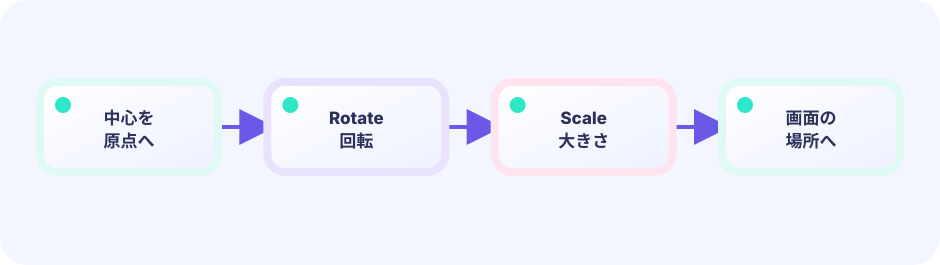

原点寄せ
中心を (0,0) に持ってきます。
Translate(-w/2,-h/2)
★★☆☆☆ / PLAYABLE
同じ GeoM に Rotate と Scale を足すと、絵が回って伸び縮みします。大事なのは順番。中心を原点へ寄せてから回すと、真ん中を軸にきれいに回ります。
はじめて読む人へ
GeoM.Rotateは絵を回す設定、GeoM.Scaleは横・縦の大きさを何倍にするかの設定。w/hはwidth（横幅）/height（高さ）です。-w/2,-h/2で絵の中心を座標(0,0)へ合わせてから回します。スタンプと移動で使ったTranslateへ、回転と拡大縮小を足す段階です。 Go用語メモ：整数型（int）は小数を持たない数、浮動小数点型（float32/float64）は小数を持てる数、typeはデータの箱の種類を決める言葉、funcは処理をひとまとめにする関数の印です。[]TはTを順番に並べるリスト、appendはその末尾へ一つ足す命令です。Updateは数字と状態を進め、Drawはその結果を絵にします。
このページの1本
説明と次のコードを対応させてから、ゲームで変化を確かめよう。
op.GeoM.Rotate(angle); op.GeoM.Scale(sx, sy)pivotをたとえる
左上を軸に回すと絵が遠くへ飛びます。絵の中心を原点へ寄せ、RotateとScaleを使い、最後に置きたい場所へ戻す順番を守ります。
ひとつのゲーム、自由な見せ方
Updateとgame構造体がゲームの事実を司ります。下の並んだ画面は、同じ自動プレイの位置・箱・ゴールを同時に見ています。違うのはDrawだけで、このデモ以外の見せ方にも自由に差し替えられます。
このコースも LEVEL 01 の Update（数字）とDraw（絵）の独立した境界の上にあります。ここでは同じ状態を別の描き方へ投影する方法を一段深く扱います。

PLAYABLE / LIVE GO + マウス
回転と拡大をボタンで操作し、軸を「中心」と「角」で切り替えます。角を軸にすると、絵が大きく振り回されるのが分かります。
DEEP DIVE / PIVOT
変換は「行列のかけ算」で、書いた順に効きます。左上のまま回すと、絵は左上を軸にぐるっと大回り。先に中心を原点(-w/2,-h/2)へ動かしてから回し、最後に置きたい場所へ Translate すると、中心で回ります。Rotate の角度は度ではなくラジアンです。0.7ラジアンは 0.7×180/π ≒ 40度。Scale(2,2) は原点を中心に2倍にするので、中心回転したいときは先に中心を原点へ置きます。
中心を (0,0) に持ってきます。
Translate(-w/2,-h/2)
その状態で回転と拡大をします。
Rotate / Scale
置きたい場所へ運びます。
Translate(cx,cy)
TRY IT / GeoM
回転と拡大をボタンで操作し、軸を「中心」と「角」で切り替えます。角を軸にすると、絵が大きく振り回されるのが分かります。
IN THE REAL GAME
原点寄せ→回転・拡大→配置。この順番が回転の要です。
op := &ebiten.DrawImageOptions{}
op.GeoM.Translate(-w/2, -h/2) // 中心を原点へ
op.GeoM.Scale(1.7, 1.7)
op.GeoM.Rotate(0.7) // 0.7 rad ≒ 40°（ラジアンで回す）
op.GeoM.Translate(cx, cy) // 置きたい場所へ
screen.DrawImage(sprite, op)WHY ORDER?
同じ命令でも、書く順が違えば見え方が別物になります。
WHY CENTER?
中心軸なら、コマや弾がその場でくるくる回ります。
TRY NEXT
Scale を sin で揺らすと、心臓のように拡大縮小します。
FEEDBACK